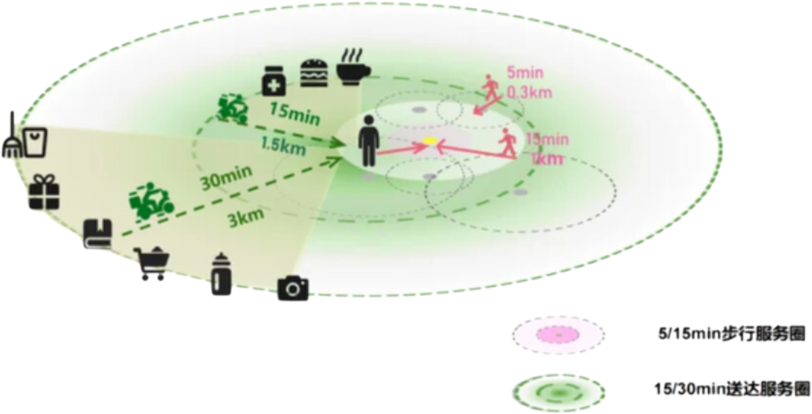

从外卖看宅经济

—— 宅居消费的“大数据”分析
在当今这个快节奏与高压力并存的时代，"宅"已成为一种生活方式的新常态，而外卖，作为宅经济中最为活跃的一分子，正悄然编织着都市生活的新图景......
你了解宅经济吗？
“宅经济”是近年来呈现快速发展的一种经济现象,是居民在住宅中参与产品或服务的价值创造活动,或者是与居民在住宅中完成商品或服务交易相关的经济活动,呈现出与传统经济活动显著不同的特征。 简单来说,“宅经济” 就是与居民待在家里相关的经济活动。
—— 宅居消费的“大数据”分析
在当今这个快节奏与高压力并存的时代，"宅"已成为一种生活方式的新常态，而外卖，作为宅经济中最为活跃的一分子，正悄然编织着都市生活的新图景......
你了解宅经济吗？
“宅经济”是近年来呈现快速发展的一种经济现象,是居民在住宅中参与产品或服务的价值创造活动,或者是与居民在住宅中完成商品或服务交易相关的经济活动,呈现出与传统经济活动显著不同的特征。 简单来说,“宅经济” 就是与居民待在家里相关的经济活动。
现如今，疫情已然过去，人们恢复正常的生产生活，但“宅经济”发展不会停滞，其中外卖是“宅经济”的重要组成部分。为了探究宅经济的发展，我们统计了各大省市的外卖销量情况
外卖员的足迹，遍布了各大省市。
如果只从城市排布来看，外卖消费者的分布是这样的：

经过调查，外卖订单量最多城市的Top10分别是他们：
可以看出，外卖消费者主要集中在北京、上海、深圳、广州、成都、杭州等城市。而单论外卖订单量，北京竟超过第六名1倍！
这里有你的城市吗？
与此同时，我们发现大多数人更倾向于点本地特色菜品。

无论是本地人的坚守还是外来人的尝鲜，都是对当地风俗的热爱。
影响大家点外卖的因素有很多，为了进行分析，我们整理出了以下几条：


每周点3-4次，5-10次、11-20次的消费者，组成了外卖大军中的大多数，20-34岁的人们已经把外卖写入自己的食谱，女性的订单量占比更是达到了59.0%,我们已经将外卖“生活化"，“常态化”。究竟是自己下厨不方便，还是出门下馆子太劳累？或许，这些都是原因的一部分。

大多数人认为自己没有时间或不想做饭，也有半数人图方便省事，于是我们统计了各个时间段的外卖品类占比，看看是不是有当我们不想做饭的时候，选择饭点外卖会更多。

事实果真如此。在早饭，午饭，晚饭的时间点前，美食类外卖的占比高于90%。看来大家是真的宅在了家中，将“宅”进行到底。
同时，对所有外卖的品类分析中，我们发现当下人们的外卖包装里面不只有主食饭菜，还有各种各样的餐饮，如甜点，蔬果，饮品。“宅经济”模式下，生产和消费均呈现出“全天候”的特点。
尽管没有到店，”顾客就是上帝“的宗旨仍然在我们和店家心中，像令牌，又像训诫。外卖平台究竟用了怎样的巧计夺得了消费者的欢心？

作为明智的消费者，我们考虑的因素真不少。65.31%的人追求更多更好的餐饮，50.38%的人会更考虑配送的速度，配送费、价格、习惯、配送态度，这都是我们的考虑因素。而配送的速度和配送费都与配送距离息息相关。
在线餐饮让更多的餐饮服务从不可达变成了30分钟内可上门的服务，使人们在饮食上有更多选择，2023年用户平均购买的餐饮品类数比2020年增加了1.3个。同时各大平台不断优化配送服务，增加可选品种，争取到了自己的死忠粉。

在挑剔的消费者筛选下，美团和饿了么成功抢下超过一半的顾客。
因此，分析这两个平台的数据，更有利于我们掌握大多数人的情况。统计了2018-2024年美团外卖各品类订单量的占比后，我们得出了下面的统计表。

尽管有所下降，快餐简餐仍然是超过半数人的首选，而饮品作为新兴的非主食类饮食，近年来”异军突起“，成为了外卖行业的”后起之秀“。

此外，外卖价格也会影响我们的选择。

21-40元是我们选择的大区间，外卖并不会成为我们放纵自我的奢侈之地。
在外卖需求的飞速增长下，对外卖行业的要求也越来越高，外卖企业的规模也在不停发展。
此处插入结论